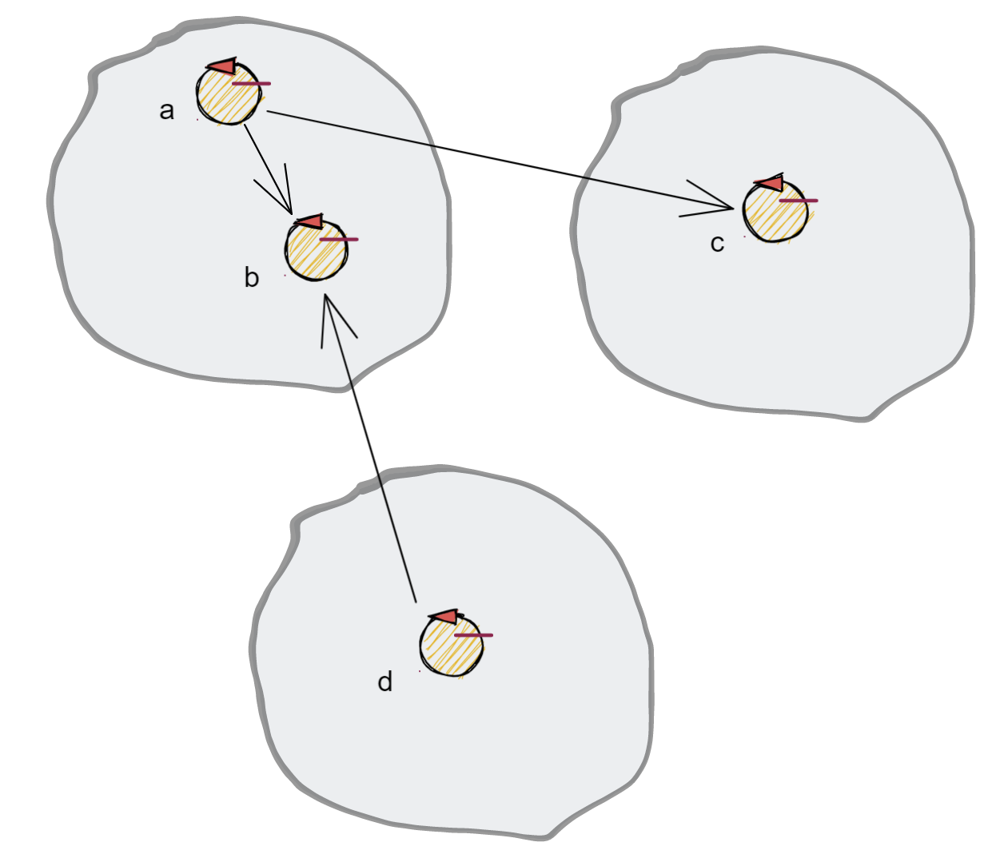

Attori¶
Progetto it.unibo.actorComm¶
realizza un contesto che permette comunicazioni
TCP/UDPcon componentiActor22(attori versione 2022)produce la libreria: it.unibo.actorComm-1.1.jar
dipende dalla libreria it.unibo.qakactor-2.6 di cui usa;
interface it.unibo.kactor.IApplMessage class it.unibo.kactor.ApplMessage implements it.unibo.kactor.IApplMessage class it.unibo.kactor.Actor22 extends it.unibo.kactor.ActorBasic
definisce:
public interface Interaction2021 extends it.unibo.is.interfaces.protocols.IConnInteraction //libreria uniboInterfaces.jar public class ActorJK
ActorJK¶
ActorJK : classe Java che fornisce metodi static per l’uso di Attori-kotlin 2020
Actor22¶
Actor22 : classe Java che specializza la classe-base degli attori-kotlin 2020 per la usabilità nella versione 2022.
it.unibo.radarSystem22.actors¶

La visione¶
Un attore è una entità concettualmente autonoma che vive in un contesto
Un attore interagisce con altri attori inviando loro messaggi (dispatch o request)
Un attore deve essere capace di ricevere messaggi (o risposte) al fine di elaborarli realizzando la voluta business-logic
Un attore conosce il nome degli altri attori del sistema
Focalizziamo l’attenzione su un componente, denominato attore (actor), che presenta le seguenti proprietà:
ha un nome univoco nell’ambito di tutto il sistema;
è logicamente attivo, cioè dotato di flusso di controllo autonomo;
nasce, vive e muore in un contesto che può essere comune a (molti) altri attori;
è capace di eseguire elaborazioni autonome o elaborazioni di messaggi inviategli da perte di altri attori;
è capace di inviare messaggi ad un altro attore, di cui conosce il nome;
è dotato di una sua coda locale in cui sono depositati i messaggi inviategli da altri attori (o da se stesso) quando i mesaaggi arrivano mentre l’attore è impegnato in una fase di elaborazione;
elabora i messaggi ricevuti uno alla volta, prelevandoli dalla coda in modo FIFO.
Al momento possiamo pensare che ogni attore sia realizzato in Java con un Thread e una BlokingQueue, ma motivi di efficienza ci porteranno in seguito ad utilizzare le coroutines e i channel di Kotlin.
{kind=link}
Un contesto:
costituisce una macro-parte di un sistema distribuito, di norma formato da due o più contesti;
è associato a un nodo di elaborazione; come tale possiede un indirizzo IP e utilizza uno o più protocolli
di comunicazione (tra cui sempre TCP);
conosce tutti gli altri contesti del sistema e la dislocazione di ogni attore nei diversi contesti, distinguendo gli attori in due categorie: locali (a sè) e remoti (allocati in altri contesti);
fornisce agli attori locali la capacità di inviare/ricevere messaggi a/da un altro attore;
implementa l’invio di un messaggio da parte di un attore locale a ad un attore locale b usando la memoria comune (la coda di messaggi associata all’attore b);
implementa l’invio di un messaggio da parte di un attore locale a ad un attore NON locale g avvaledosi della sua conoscenza sulla dislocazione degli attori nel sistema e del protocollo di comunicazione usato dal contesto di g;
implementa la ricezione di un messaggio utilizzando il nome del destinatario